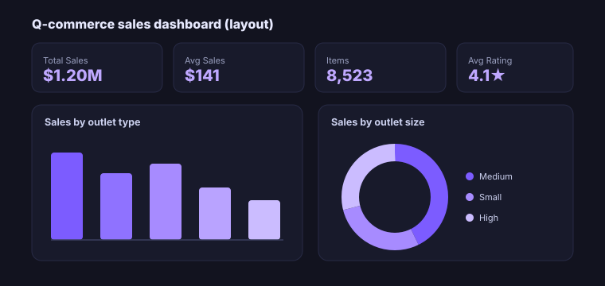

Q-Commerce Executive Dashboard
An executive Power BI dashboard that gives leaders a single, real-time view of sales, product and customer performance, built for decisions, not decoration, and guiding a projected 15% sales uplift.

End-to-end lifecycle
- Business Problem
Leaders lacked a single, trustworthy view of performance, sales, products and customers lived in separate spreadsheets, slowing decisions.
- Business Context
A quick-commerce business where margins are thin and speed of decision-making is a competitive advantage.
- Data Sources
Sales/transaction, product and outlet data supplied as Excel/CSV extracts.
- Data Engineering / ETL
Cleaned and shaped the data with Power Query, resolving inconsistencies and building a refreshable model.
- Data Modeling
A star-schema-style model with DAX measures (Total/Avg Sales, Items, Avg Rating) for fast, consistent metrics.
- Analytics & Statistical Analysis
Trend, composition and ranking analysis across outlet types, sizes and item categories.
- Visualization & Reporting
An interactive dashboard, KPI tiles, a metric switcher, cross-filtering and conditional-formatting tables, designed for executive readability.
- Machine Learning / AI
Not in scope, a focused BI build, with the warehouse and ML projects covering that ground.
- Business Impact
Real-time tracking of 10+ KPIs that supported clearer, faster decisions and a projected 15% sales uplift.
- Lessons Learned
Layout and interactivity drive adoption as much as the data does; a clear "so what?" beats adding more charts.